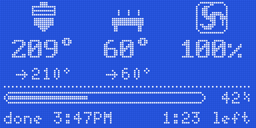

PD-CURA-1

CURA PLUGIN
For Cura 5 and the Printdeck

Contents
- Setup
- What the plugin does3
- Install the plugin4
- Connect the Printdeck5
- Printing
- Send a print6
- The Printdeck tab7
- The roll and the material10
- Follow the print11
- Print on a part
- Print on a part12
- Prepare the job13
- At the printer14
- Test print: the cube15
2
What the plugin does
The Printdeck plugin connects Cura to the Printdeck. It uses the address and the API key of the OctoPrint connection plugin. A message in Cura shows each action of the plugin.
- The print button says Print to Printdeck. After a send, Cura opens the Printdeck tab.
- The Printdeck tab shows the touch screen of the deck, live. You click it as you tap the touch screen.
- When the roll in the deck changes, Cura changes to the material of the roll.
- Each roll on the deck has a material in Cura, at the top of the material menu.
- After a slice, Cura warns you when the roll is too short for the model.
- During a print, the Preview of Cura shows the layer that prints.
- The Print on a part tool prints new models on a part that is printed already.
The plugin needs Cura 5. Cura LulzBot Edition (Cura 4.13) does not show the tab and the tool.
Setup
3
Install the plugin
From the release
- 1Open the releases of the Printdeck: https://github.com/beetlebugorg/printdeck/releases.
- 2Download the file Printdeck.curapackage from the latest release.
- 3Drag the file onto the Cura window. Cura installs the plugin.
- 4Close Cura, and start it again.
From the repository
- 1In Cura, select Help > Show Configuration Folder.
- 2Copy the folder slicer/cura-plugin/Printdeck of the Printdeck repository into the plugins folder of the configuration folder.
- 3Close Cura, and start it again.
To make the package yourself, run slicer/cura-plugin/package.sh. It writes Printdeck.curapackage.
Setup
4
Connect the Printdeck
Cura sees the deck as an OctoPrint printer named Printdeck. Install the OctoPrint connection plugin first.
- 1In Cura, open the Marketplace. Install OctoPrint Connection, and restart Cura.
- 2Select Preferences > Configure Cura > Printers. Select your printer, and click Connect OctoPrint.
- 3Select Printdeck in the list. If the list does not show it, click Add, and type the address printdeck.local.
- 4Click Request to get the API key.
- 5The touch screen asks "Allow Cura to use the Printdeck?". Tap Allow.
- 6Click Connect, and close the preferences.
When Cura connects, a card next to the slice button shows the roll in the printer.
The system page of the deck also shows the API key for slicers: http://printdeck.local/system.
Setup
5
Send a print
- 1Slice the model as usual.
- 2Click Print to Printdeck. Cura sends the file to the deck.
- 3Cura opens the Printdeck tab. The tab shows the deck as the print starts.
The print starts after the upload when the option "Automatically start print job after uploading" of the OctoPrint connection is on.
Printing
6
The Printdeck tab
The Printdeck tab is next to Monitor. Click a key in the tab as you tap it on the touch screen.
Printing
7
While the tab connects, it shows the start screen of the deck with "Connecting to printdeck.local".
During a print, Show in Preview under the screen opens the file of the print in the Preview.
Printing
8
When the tab shows no deck
| Cura has no connection to a Printdeck | Connect the printer with the OctoPrint connection plugin. See Connect the Printdeck. |
| The Printdeck refused the screen | Update Printdeck OS, and check the API key of the OctoPrint connection. |
Printing
9
The roll and the material
The plugin reads the roll in the printer every 10 seconds.
Cura follows the roll
When the roll in the deck changes, Cura changes to its material. A message shows the change, for example: "The Printdeck has Black (PLA). Cura now prints with Generic PLA." With no Cura profile for that material, Cura keeps its material.
Your rolls in the material menu
Each roll on the deck has a material in Cura, with the name, the color, the price and the weight of the roll. The rolls are favorites, at the top of the material menu. When you remove a roll from the deck, its material leaves the favorites and stays in Cura.
A short roll
After a slice, Cura compares the grams of the model with the grams left on the roll. When the roll is too short, a message stays until you close it: "The model needs 120.4 g of filament. Black has 80.0 g left."
A file for another material
Before the deck prints a file for another material, the touch screen asks first, for example: "The file is for Black ABS. White (PLA) is in the printer." Tap Print anyway, or change the roll first.
Printing
10
Follow the print
During a print of the file that Cura has open, the Preview shows the layer that prints.
A print that Cura does not have open
- 1Open the Printdeck tab.
- 2Click Show in Preview, under the screen of the deck. Cura downloads the file from the deck, and opens it in the Preview.
- 3The Preview follows the layer that prints.
Play with the printer
In the Preview of the file that prints, click Play. The nozzle of the Preview then moves with the nozzle of the printer. To see other layers, click Pause, or drag a slider.
The Printdeck tab shows the time left. When the print ends, Cura shows a message.
Printing
11
Print on a part
The Print on a part tool prints new models on a part that is printed already, for example a logo on a lid. The part goes into a pocket on the bed. The deck checks the height of the part with a paper test.
Print on a part
12
Prepare the job
- 1Open the part and the new models in Cura. Lay the part on the bed with its face for the new models up.
- 2Keep the part away from the front and the left edge. The print primes the nozzle there.
- 3Select the part, and click Set as base. Cura adds the pocket: a low wall around the part, with open corners.
- 4Select a new model, and click Place on the base. The model goes to the top of the part, and stays at that height.
- 5Move the model on the face as usual. To print into a pocket of the part, lower the model with the Z of the Move tool.
Files from one assembly
When the part and the new models come from one assembly, their files share one frame. Select the new models, and click Place as in the files. The models go to their exact place on the part, also after you turned the part.
Lettering
Type the text, its size, and its height over the face (Raised). Then click Add text. The text goes on the top of the part, at its middle. Move and turn it as usual.
While a part is the base, the tool turns off "Ensure models are kept apart" in Cura. Click Clear the base to turn it on again.
Print on a part
13
At the printer
- 1Click Print to Printdeck. The deck prints the pocket on the bed.
- 2The nozzle lifts, and the print pauses. The touch screen shows the message of the pause.
- 3Put the part in the pocket.
- 4For another color, change the filament now.
- 5Tap Check the height. The nozzle goes over the part.
- 6Put a sheet of paper under the nozzle. Lower the nozzle until the paper drags a little, then tap Accept.
- 7Tap Resume. The new models print on the part.
After the height check, the screen shows the difference from the file, for example +0.12 mm. If you tap Resume with no height check, the deck asks first.
The next color
Keep the part in its pocket. In the tool, check The pocket is on the bed, and send the next file. That file has no pocket. It homes Z up first, does not probe or heat the bed, and purges beside the pocket.
The pause and the height check need the deck bundle with [printdeck_pause]: v0.2.0-beta.1-9 or later.
Print on a part
14
Test print: the cube
The files are in slicer/test-prints/onpart/ of the repository. The test is a 20 mm cube, then a cross on its top in another color. The cross is 1 mm high, with arms of 14 x 3 mm.
Job 1: the cube
- 1Open cube.stl in Cura, and print it (about 16 minutes).
- 2Take the cube off the bed.
Job 2: the holder and the cross
- 1Clear the build plate. Open cube.stl and cross.stl.
- 2Select the cube, and click Set as base. Cura adds the holder (the pocket) around the cube, and does not print the cube.
- 3Select the cross, and click Place as in the files. The cross goes on the top of the cube.
- 4Print. The deck prints the holder, then lifts the nozzle and pauses.
- 5Put the cube in the holder.
- 6Change the filament to the second color.
- 7Tap Check the height, and do the paper test on the top of the cube.
- 8Tap Resume. The deck prints the cross.
What to look at
- XY: the cross is at the center of the top. Measure the 3 mm from each arm end to the edge of the cube.
- Z: the first layer of the cross sticks to the cube. It is not squashed, and it is not in the air.
- The purge after the filament change does not go on the cube.
Print on a part
15
The Printdeck plugin for Cura is part of the Printdeck repository, in slicer/cura-plugin/.
Plugin version 0.1.0. https://github.com/beetlebugorg/printdeck